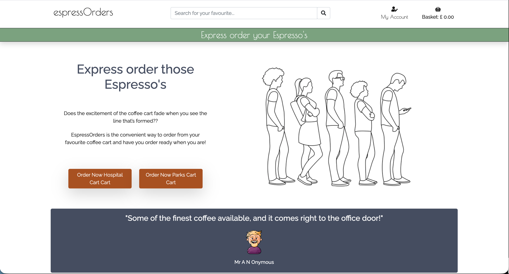
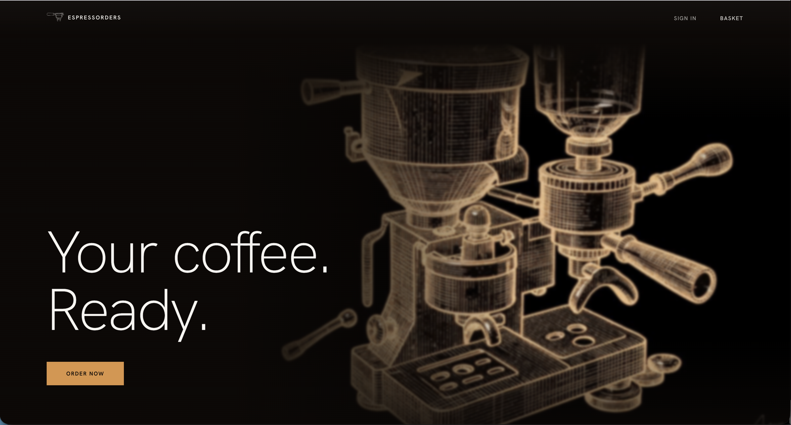
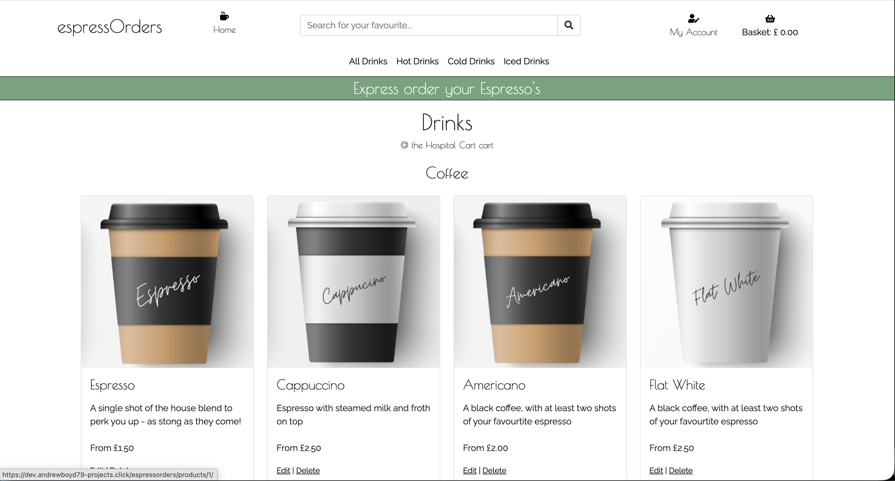
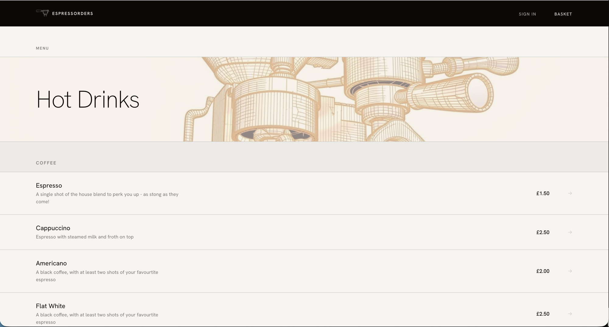
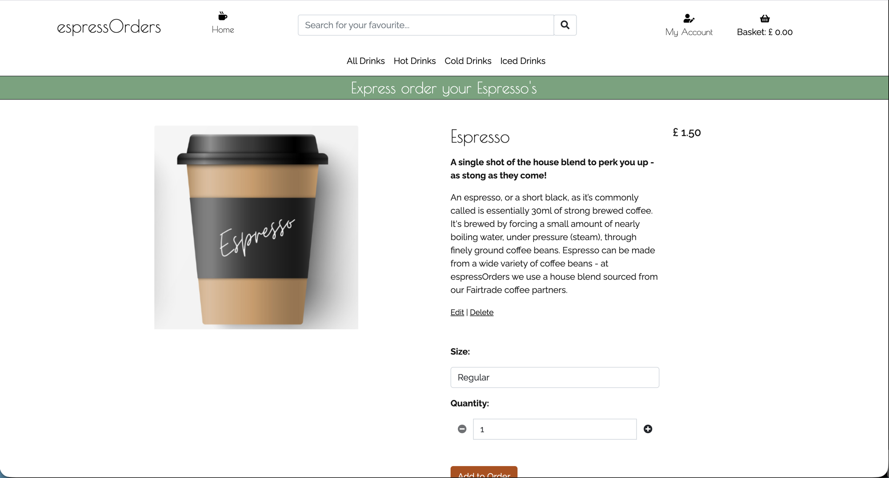
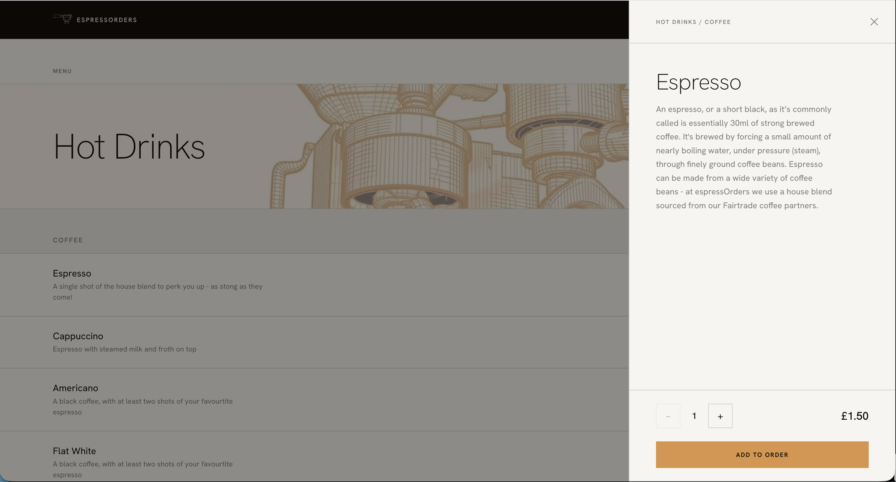
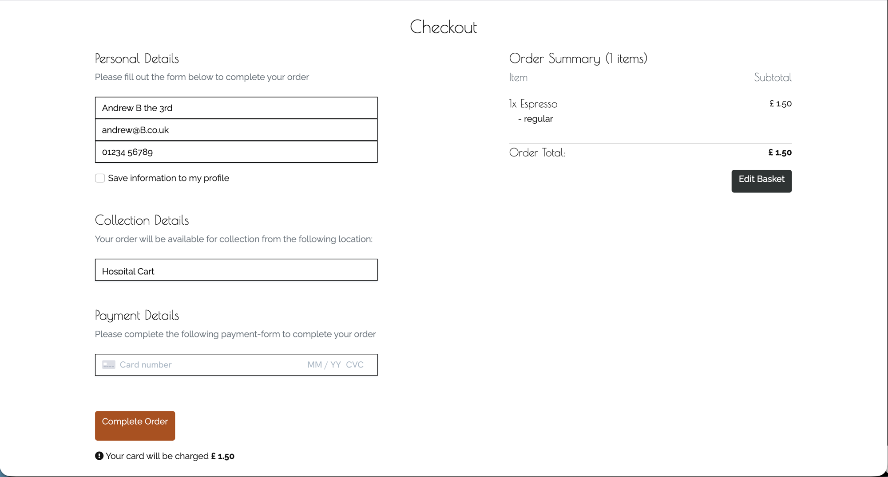
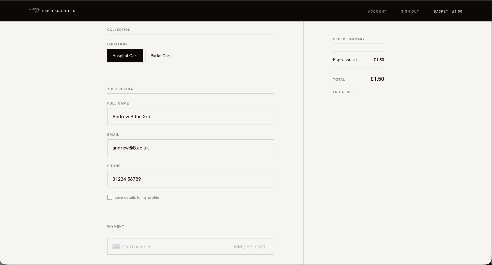
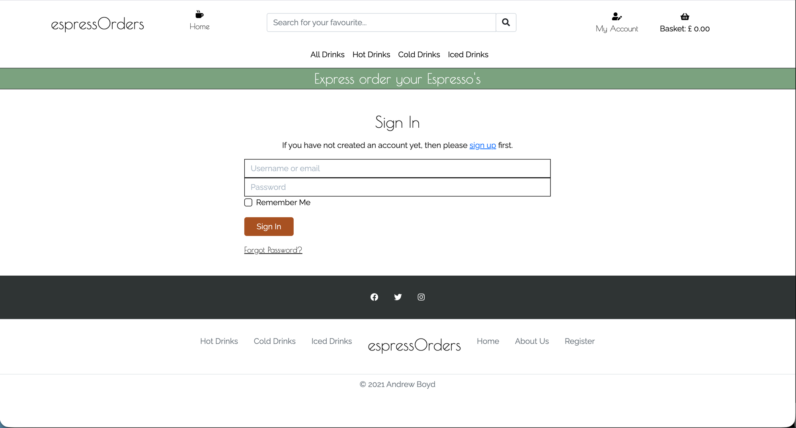
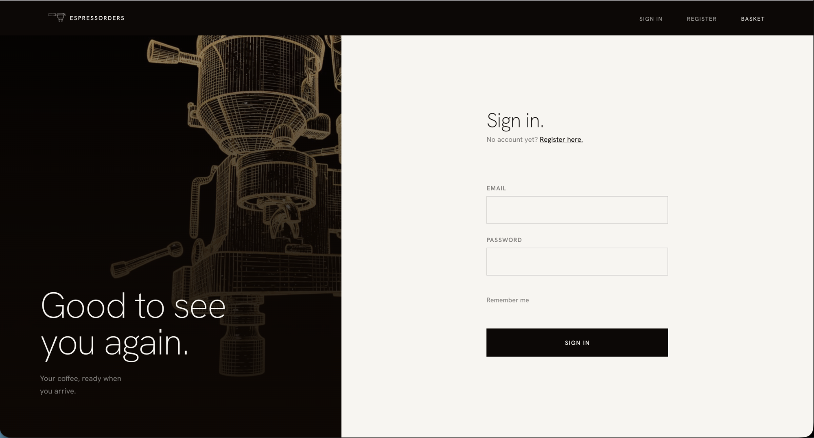

Frontend Redesign
After four chapters of infrastructure, decomposition, and mobile — the web frontend still looked like what it was: a Code Institute Bootstrap project. SEED was the answer. A bespoke design system built from scratch and applied to every template in the codebase. Not a refinement. A replacement.
The problem
The original Django monolith frontend ran on Bootstrap 5 throughout all four preceding chapters. It was functional. The microservices behind it were architecturally interesting. The mobile app was polished. But anyone who visited the web client would see a generic Bootstrap site — the same framework defaults that shipped from every Code Institute Django project submitted that year.
The platform had been rebuilt from the inside out. The frontend hadn't changed. After the mobile chapter confirmed the API layer was solid, attention turned to the web client's visual identity. The question wasn't whether to redesign — it was whether to do it properly.


The SEED design system
SEED — "The Clean Extraction" — is a bespoke design system built from scratch for espressOrders. The name references both the product and the method: nothing added that shouldn't be there, nothing removed that must stay. It explicitly rejects artisan nostalgia, Bootstrap's generic component vocabulary, and anything that prioritises visual decoration over task speed.
The system is built on the same philosophy as a well-pulled espresso. Remove every variable that isn't contributing to the result. What remains is signal.
Five product principles govern every interface decision:
- One next action per screen — nothing competes for attention
- Speed is respect — the user is in a hurry
- Restrained warmth — reliable, satisfying, not loud
- Confidence at every confirmation — the QR code moment must feel unambiguous
- Brand speaks through product — the home page attracts, then gets out of the way
The palette is near-monochromatic: warm near-black and off-white form almost every surface, with a single warm amber accent used at under 10% of any screen. One typeface family, differentiated by weight alone. No shadows — depth comes from tonal contrast. Mobile-first throughout, built for users who are in motion.
The aesthetic pivot
The redesign went through two distinct visual phases before reaching the shipped state.
Da Vinci botanical
Wireframe 3D renders
The first iteration built the products page around Da Vinci botanical illustration watermarks as category headers — warm amber for hot drinks, cool teal for cold, icy blue for iced. Visually interesting. But wrong. Botanical aesthetics read as artisan craft — hand-drawn warmth, heritage, imprecision. Exactly the anti-reference the brand brief identified.
A full visual pivot replaced every illustration slot with wireframe 3D renders: an espresso machine on the homepage hero and auth pages, machine component details as category watermarks, a ghost coffee cup on the order success page. The botanical aesthetic said "artisan café". The wireframe renders say "precision engineering". One of those matches the narrative running through every other chapter in this portfolio.
What was rebuilt
Every template in the codebase. Nine groups, approximately 30 commits, around 2,000 lines of new CSS distributed across six per-app stylesheets. Bootstrap CDN dependencies removed from base.html.
home.css built from scratch at 528 lines, replacing Bootstrap utilities entirely.about.css at 258 lines.bag.css from scratch at 222 lines. Template restructured to SEED visual language throughout.checkout.css at 692 lines. Native select hidden via CSS, replaced with pill buttons synced to a hidden input — the select still carries the POST value for form validation. Same pill pattern for modifier groups.bottom:0 and overflow:hidden on the grid container.base.html and base_no_main_nav.html updated. New logo assets. Bootstrap CDN links removed; SEED CSS files loaded per-app.The key changes, illustrated:








Key trade-offs
Bespoke over Bootstrap
Full control over visual tokens and no specificity fights. More CSS to maintain, but each file is small and scoped. The mobile app already had no Bootstrap dependency — the web client now shares the same visual language without a framework mediating it.
Wireframe renders over botanical
The Da Vinci botanical phase was visually interesting but read as artisan — directly against the brand brief anti-references. The wireframe render pivot aligned the web client's visual language with the engineering narrative running through every other chapter.
Drawer over separate page
The original monolith navigated to a separate product detail page on selection. The AJAX drawer keeps the user in the menu context throughout. Add-to-bag completes in the drawer and returns focus to the list — one less navigation step per item.
Replace Bootstrap 5 with a bespoke design system
Bootstrap 5 was the original framework from the Code Institute diploma project. After four chapters of backend and infrastructure work, the web frontend still read as a generic Bootstrap site — visually inconsistent with the platform's engineering ambition and brand direction.
- Build a bespoke design system (SEED) from scratch. No Bootstrap dependency.
- Each app gets its own scoped CSS file. No shared utility framework.
- Bootstrap CDN links removed from
base.html.
Full control over visual tokens with no specificity conflicts. More CSS to maintain, but each file is small and purposeful. The mobile app (React Native) already had no Bootstrap dependency — the web client now shares the same visual language without a framework mediating it.
Wireframe 3D render aesthetic over Da Vinci botanical
The first iteration of the redesigned products page used Da Vinci botanical illustrations as category watermarks, with subtle colour temperature shifts per section. These were visually distinctive but read as artisan and nostalgic — directly against the brand brief anti-references.
- Full visual pivot to wireframe 3D machine and cup renders across all illustration slots.
- Applied to homepage hero, auth page panels, category watermarks, and order success page.
Cohesive aesthetic across all pages — technically precise rather than artisan craft. Aligns with the engineering narrative of the platform. Required generating new image assets for every illustration slot; botanical assets were discarded.